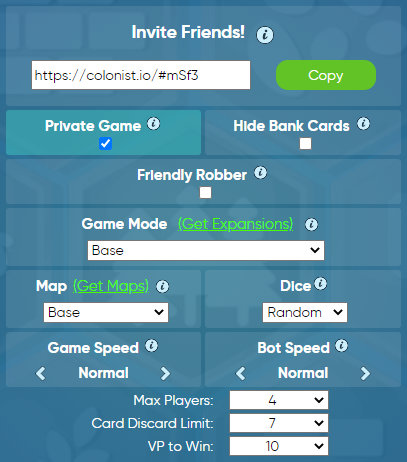

Step 1: Have one person in your group create a new game of Catan here
. The team members communicate with the game creator to follow the remaining steps.Step 2: The game creator clicks on the green "Enter Lobby" button and then the green "Create Room" button and adjusts game settings to the following:
Step 3: The game creator copies the game link under "Invite Friends!" and clicks on the chat icon in the Gather.town menu on the bottom right. They address a new message "To Nearby" and paste the link into the chat. After the game has started, the mods will send the game link and room "To Everyone" and post in the Slack channel so that people can spectate.
Step 4: To join the game, do not click the link in the chat! Instead, copy the link from the chat and paste it into the box below. If the game has already started, you will automatically join as a spectator.
IMPORTANT! Do not click the link provided in the chat! If you do, the game will open in a new tab and you'll be unable to see your teammates' video while playing the game.
Step 5: When you join the game, you can edit your name and gamepiece colour on the left side. Check "I'm Ready" to let the game creator start the game.